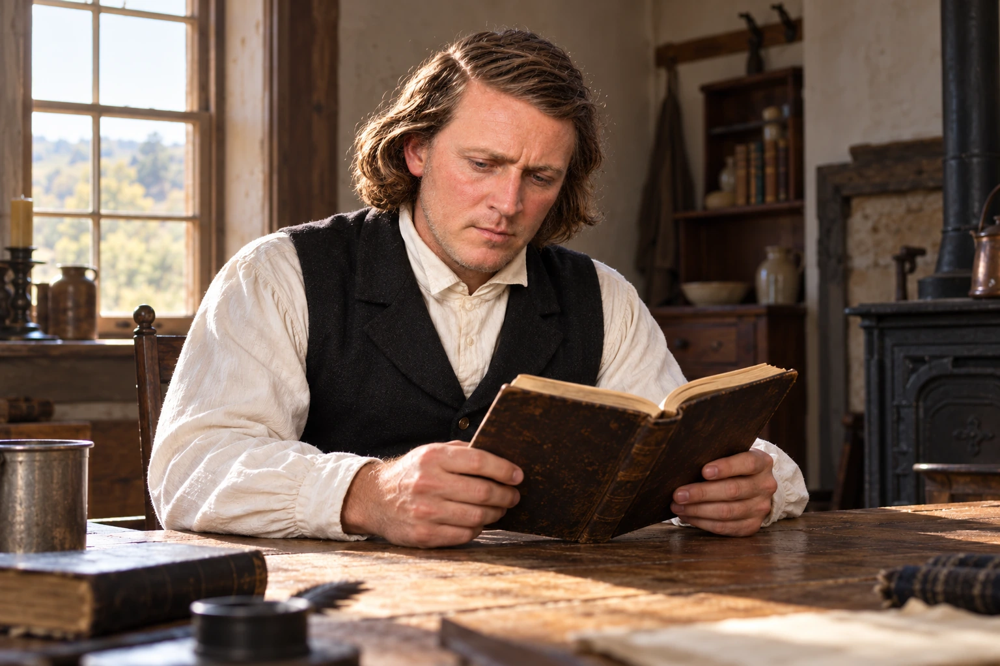
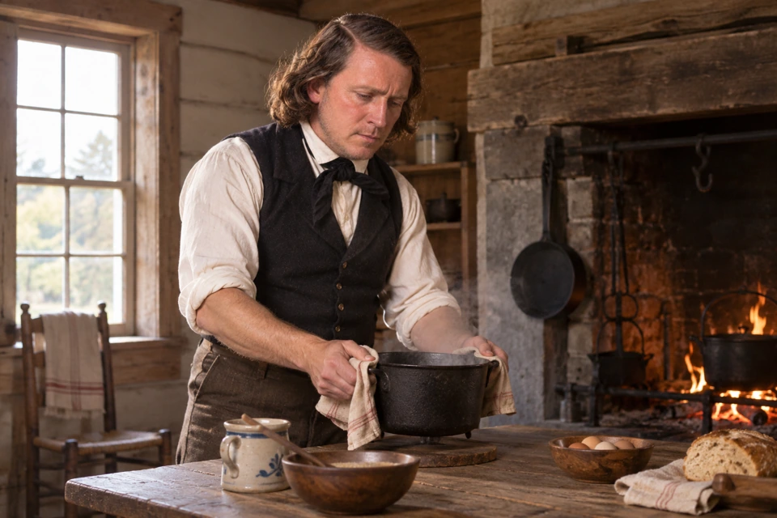
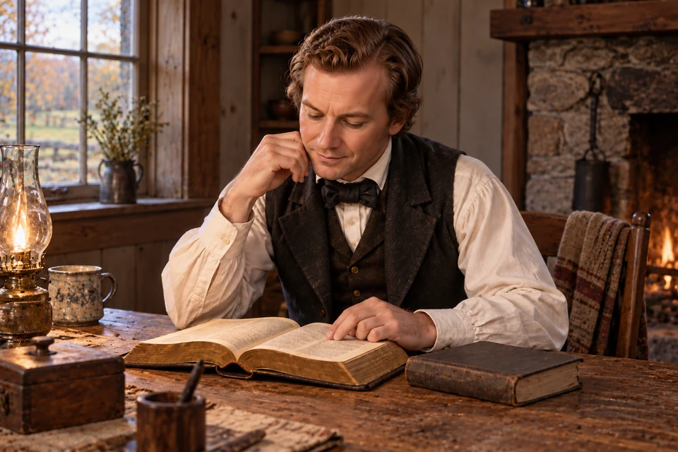
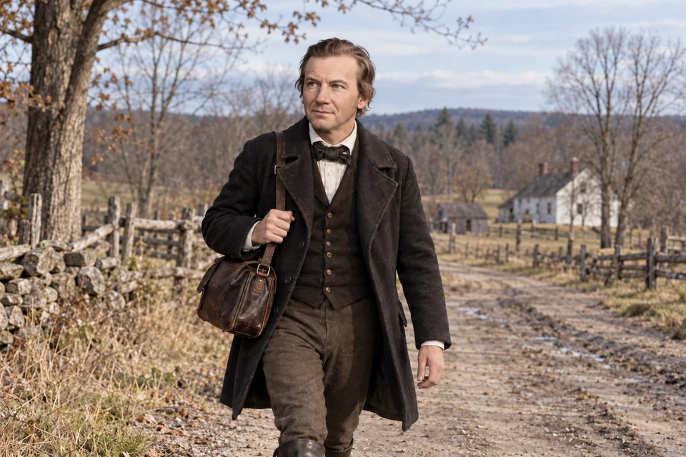
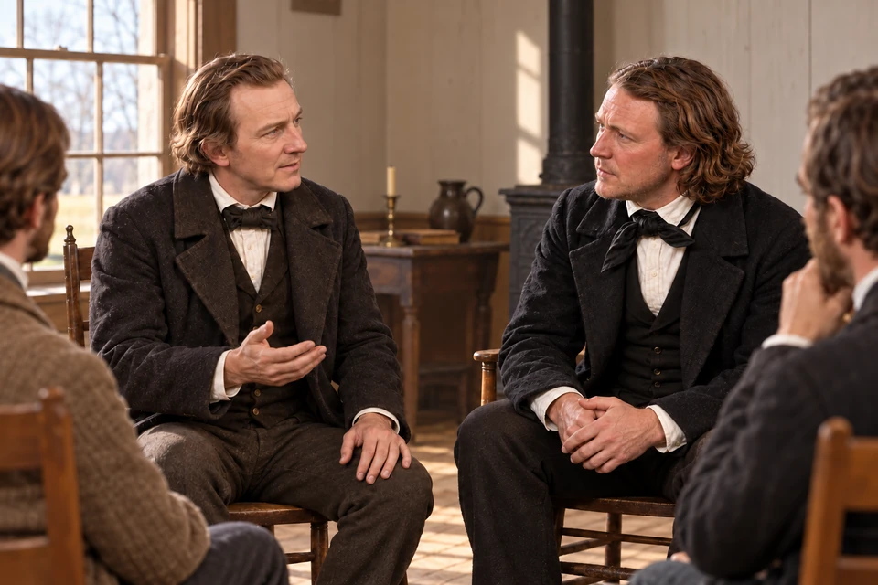
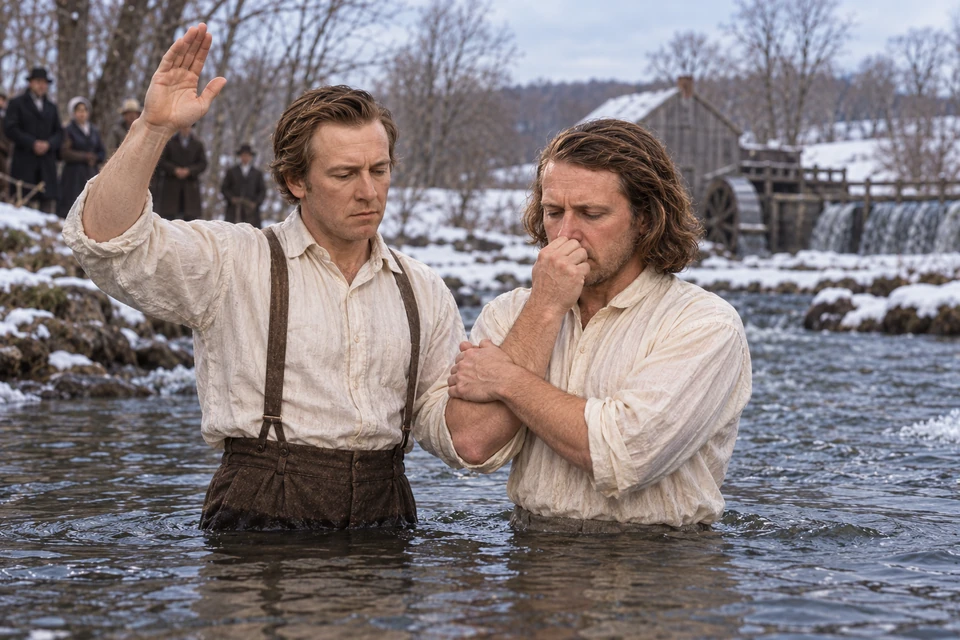
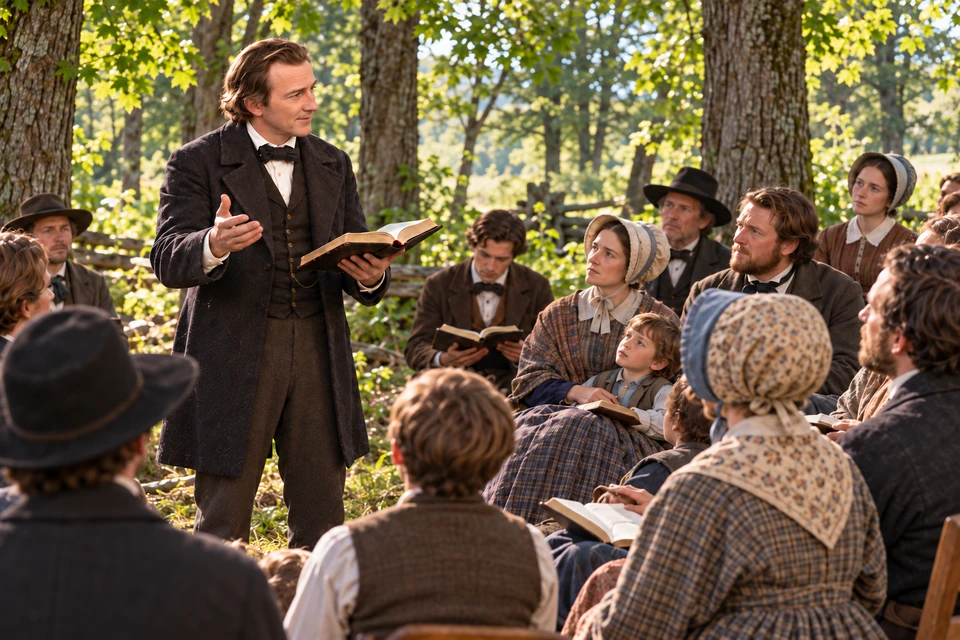
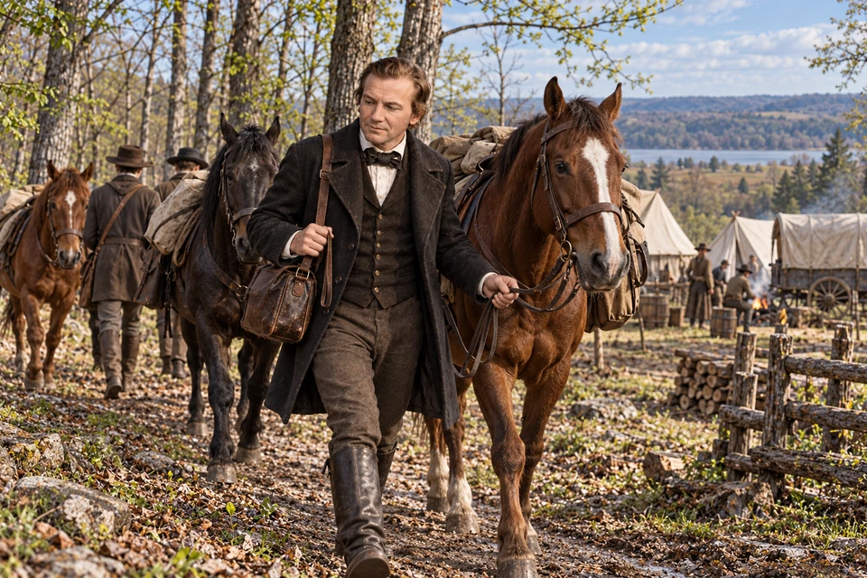
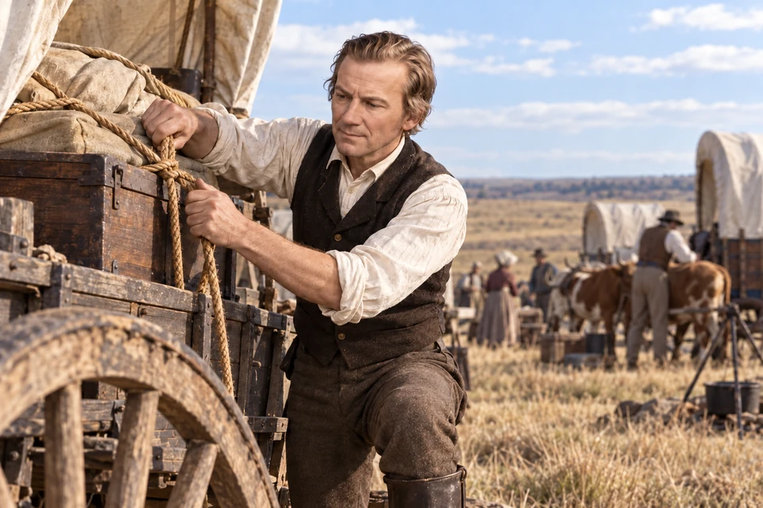
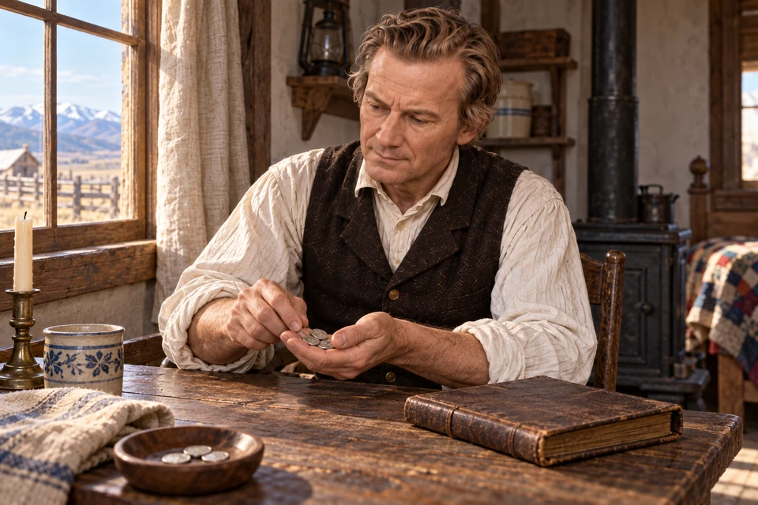

Church film · Dramatization · 6:06
Watch A Man without Eloquence
Film and preview: The Church of Jesus Christ of Latter-day Saints

Brigham Young studied the Book of Mormon before joining the Church.
The Book of Mormon reached Brigham’s family in 1830. Some relatives accepted it readily; he spent about two years studying its teachings. He wanted to know for himself.

Brigham Young prepares a meal for his household.
Brigham Young cared for a sick wife and two little girls. Miriam had tuberculosis. He prepared breakfast, dressed the children, and helped her into a rocking chair near the fireplace before going to work. In the evening he cooked supper.
These daily responsibilities were part of the life in which he studied the Book of Mormon and came to hear Miller’s testimony.

Quiet scripture study accompanies this reflection on Miller’s conversion in 1831.
Miller had only recently taken that step himself. Born in Coeymans, New York, he married Rebecca Van Zant in 1816. In May 1831, aged thirty-five, he was baptized. That same year he began missionary work in New York and Pennsylvania.
Within months, this new convert was visiting other people with the faith he had embraced. By the spring of 1832 he was thirty-six. Brigham, the carpenter he would baptize, was thirty. Their meeting belonged to the beginning of Miller’s own years of service.

Miller carried his new faith to communities in New York, Pennsylvania, and Upper Canada.
Young family recollections and the missionaries’ Canadian report
Miller was one of five missionaries from Pennsylvania who visited the Mendon area in late 1831. Their listeners included members of the Young family and Heber C. Kimball. Conversations continued beyond that first visit.
In January 1832, Brigham and Miriam traveled with relatives and Kimball to meet the believers in Columbia, Pennsylvania. They stayed about a week. Brigham remembered returning more convinced and eager to learn; on the journey home, they shared what they had heard with friends and relatives.

Brigham remembered the power of a simple testimony. The room and gathered listeners give a setting to that recollection.
Years afterward, Brigham could still remember what Miller’s testimony had meant to him. Miller had little polish as a speaker. He bore witness that the Book of Mormon was true and that Joseph Smith was a prophet. As Brigham listened, he experienced the spiritual assurance he had been seeking.
In telling the story, Brigham spoke of his understanding being illuminated and his soul filled with joy. He then pointed out the man who had baptized him: Eleazer Miller. The gratitude in that recollection reaches across the intervening years. Brigham remembered a person who had helped him know for himself.

Brigham remembered being baptized by Eleazer Miller in his millstream in April 1832. The winter setting recalls his account.
In April 1832, Miller baptized Brigham in the millstream beside Brigham’s home. It was cold and snowy. Brigham remembered the humble assurance that his sins were forgiven.
Miriam was baptized a few weeks later. By September she had died. Brigham’s new life in the Church began amid both spiritual joy and the loss of his wife.

Miller teaches in a grove in Canada, where his report described gatherings too large for a house.
Young family recollections and the missionaries’ Canadian report James Lake: Joseph Smith Papers
That summer, Miller traveled into Upper Canada with other missionaries, including members of the Young family. Their preaching drew more listeners than houses could hold. They moved their gatherings into groves.
Miller and Elial Strong later reported that hundreds were searching the scriptures. Some listeners were still considering the message; others believed. Among those Miller baptized was James Lake, a father living in Upper Canada. The mission reached households whose lives would soon become bound up with the Saints in Kirtland.

Three horses accompany Miller’s arrival at the Camp of Israel in 1834.
Camp of Israel history: May 30, 1834 Camp gathering and Miller’s exhortation
By May 1834, Miller was traveling toward Missouri with the Camp of Israel. Around noon on May 30, he and about half a dozen others joined the company just east of Rochester. They brought three horses. The timing mattered: several horses already in the camp were sick after changes in feed and country.
Miller’s arrival meant more animals able to carry the journey forward. The same history also remembers him addressing a public gathering during the expedition. The missionary Brigham had recalled for his plain testimony continued to speak among his fellow travelers and the people who came to hear them.

Miller crossed the plains in 1848. Preparing supplies for a wagon brings the practical work of that journey into view.
John Heward remembers the 1848 journey Eleazer Miller: Church History Biographical Database Rebecca Van Zant: Church History Biographical Database
In 1848, Eleazer and Rebecca crossed the plains in Brigham Young’s company. They had been married for more than thirty years; he was fifty-two and she was fifty. John Heward remembered starting west with Miller that May and stopping for several days at Winter Quarters.
Heward’s account gives the journey its everyday texture: grazing cattle along the Platte, buffalo chips for fuel, and animals made footsore by gravelly roads. When Heward’s own group could no longer move for lack of teams, help came from the valley. Eleazer and Rebecca reached the Salt Lake Valley that September.

A modest gift recalls Miller’s contribution to the Relief Society in 1854.
Great Salt Lake City Relief Society minutes, 1854 Eleazer Miller: Church History Biographical Database Rebecca Van Zant: Church History Biographical Database
Six years later, Eleazer’s name appears beside a gift of ninety-five cents in the Great Salt Lake City Relief Society’s minutes. Rebecca’s name appears in the society’s membership list and meeting records. The women gathered in one another’s homes, prayed, and worked on a rag carpet to raise money for clothing for Native women and children.
The May 28, 1854 donation list preserves Eleazer’s contribution alongside gifts from other neighbors. It is a small, concrete glimpse of life after the long journeys. He lived until April 12, 1876, dying in Salt Lake City at eighty. Rebecca survived him and lived another ten years.
Church film · Dramatization · 6:06
Film and preview: The Church of Jesus Christ of Latter-day Saints
How can patient study and another person’s testimony work together?
What can you share honestly without trying to sound impressive?
How might one meaningful moment grow into years of ordinary service?